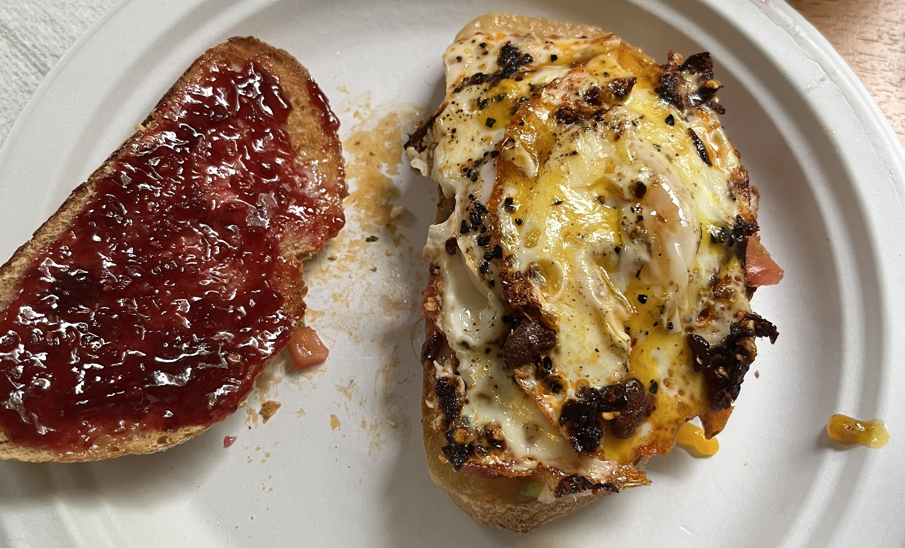

Recipe
Home
Sundial
Fried Egg Sandwhich
This is what I made for breakfast this morning. Personally, I hate the taste of Avocado but I will admit that this would probably make a great addition to avocado toast.
Similar Recipe
Ingredients:
2 slices of sourdough bread
Cheese - I prefer Havarti or Swiss
1 Egg
2 slices of tomato OR pico de gallo
Chilli oil
Salt n Peppa
Directions:
Toast your bread.
Heat up a pan on the stove on medium-low heat.
Place a healthy spoonful of chilli oil in the pan and give it a minute to warm up.
Crack your egg into the pan. Add salt and pepper to taste and place a lid over it to make it cook faster.
Add your favorite cheese to one of the toasted slices. You can melt the cheese onto the bread in the microwave or by broiling in the oven.
Add your tomato slices or pico ontop of the cheese.
When the egg whites are fully cooked, but the yolk is not, transfer the egg onto the slice of bread. Place the other slice on top, and dig in!
